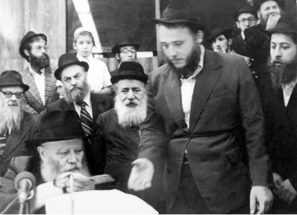

Outstanding Man of Chesed
Two years ago, the Chassid, R’ Nesanel Dreifus, rav of a community and one of the Rebbe’s veteran shluchim in Netanya suddenly passed away at the age of 58 following a heart attack. * For over thirty years, he transformed the lives of thousands of Jews and drew them close to their Father in heaven a

R’ Avrohom Meir Nesanel Dreifus was born in 5713/1953. His father was Todros Dreifus, a professor of Jewish philosophy at Bar Ilan University. As a man involved in education, after World War II he gathered students and started a Jewish school called Maimoni.
The family moved to Eretz Yisroel from France and settled in Katamon in Yerushalayim. R’ Nesanel was a young boy when he became acquainted with Chabad. At some point, he switched to Yeshivas Toras Emes where he assiduously studied Nigleh and Chassidus.
His family did not approve of the change in their son. They found the Chassidic practices he adopted hard to accept. His father wanted his son to follow in his ways and get a degree, and even wrote to the Rebbe and complained about his son. The Rebbe wrote back a long letter in Adar 5733 in which he wished him much nachas from his son and laid out the attitude the father ought to have regarding the changes in his son.
In Toras Emes, he became friends with R’ Kalman Druk who learned with him and was the one who first suggested that he write to the Rebbe.
R’ Elozor Kenig, who learned with him at that time in yeshiva and later became his mechutan, said, “He was a very Chassidishe and p’nimius’dike bachur. He used his time for learning.
“You could see a certain doggedness in him. As soon as he discovered Chassidus, he went with it, with all his heart, and nothing could stop him from the truth. He invested a lot in order to adjust to the Chassidishe atmosphere and Torah learning. The language was hard for him and he worked hard to be a Tamim like everyone else.”
When he was fifteen, he met R’ Menachem Wolpo, today a rav of a Chabad community and shliach in Netanya. At that time, he was a talmid in yeshiva whose parents lived in Yerushalayim. They later became the first shluchim in Netanya. Nesanel told his friend that he had no place to eat that Pesach, because his home did not observe the stringent practices of Chabad. R’ Wolpo invited him to his house and that is where he spent all of Pesach.
He served in the army for two years. Since he came from France, he was only required to serve for two years. Then he went with his friends for a year on K’vutza, with the encouragement of the mashpia, R’ Mendel Futerfas who paid for his ticket and his stay there. After K’vutza he went on shlichus to the yeshiva in Brunoy.
In 5736 he married Chana Mendelssohn.
FAITHFUL SOLDIER ON SHLICHUS
R’ Menachem Wolpo was already working as a shliach in Netanya upon the insistence of R’ Moshe Slonim. As the work expanded, R’ Wolpo invited his friend R’ Dreifus, together with his wife, to join him on shlichus.
“I knew Nesanel personally and knew him to be a Chassidishe person who cared, and I was thrilled to make him this offer. He accepted.”
R’ Dreifus, wife and baby daughter, arrived on shlichus in 5737. They rented an apartment in the center of town and began being teaching Torah to those who were not yet religious while simultaneously starting a program for the religious members of the city to acquaint them with Chassidus. With his talents and charm, R’ Dreifus was able to reach all types of Jews.
“Until his final day, he had connections with the religious community and the irreligious community,” said R’ Wolpo.
R’ Wolpo married a few years later and settled in the immigrants’ neighborhood in southern Netanya. The two shluchim worked together day and night on reaching people through programs, Evenings with Chabad, farbrengens, shiurim, and mivtzaim. A few years later, R’ Binyamin Niazov joined them.
HE TOUCHED SO MANY PEOPLE
R’ Dreifus touched the lives of so many people who will find it hard to forget the man that stood by their side, whether for a moment, for many days, or even over many years.
He had a tremendous influence on people. R’ Moshe Antizada, rav of the Iranian community in Netanya, said:
“You can say that I was a close disciple of his. He was my mashpia for the entire thirty years since I first met him. I took my first steps in Judaism thanks to him. I would consult with him, talk to him, and I got so much from him. I owned a grocery store and R’ Wolpo was my customer. After R’ Dreifus moved to Netanya, he also became my customer and we began to talk. He was pleasant to talk to and we decided that I would change the mezuzos in my house. He brought me mezuzos and did not send me to buy them. On another occasion we spoke about tzitzis. I won’t forget how he spoke about the importance of tzitzis. I was inspired and said I wanted to wear them. He went home and came back soon after with a pair of his own tzitzis.
“Throughout the years he was with us, from our first foray into Judaism, through the births of our children, the brissin, the bar mitzvahs, and the weddings. He was involved in every detail of our children’s shidduchim. He often guided us and he gave us good advice. He helped me in every aspect of my advancement in religious life whether it was going to learn and where, about shlichus, about being a rav of a k’hilla, etc. I didn’t make a move without consulting him.
“After Didan Natzach, the Rebbe said that everyone could make requests for brachos and he would take the letters to the Ohel. Everyone felt it was an auspicious time and numerous letters were sent to the Rebbe.
“At that time, we lived in a small apartment on a high floor. We had to climb eighty steps! We asked the Rebbe for a bracha for a spacious home. A week later, my wife found a large apartment of 160 square meters. At the time, we did not know the law about not being allowed to transfer a state subsidized mortgage to a home that measured more than 100 meters. The price of the house was a bargain and we quickly signed the contract. We wrote to the Rebbe and asked for a bracha and in the return letter it said, ‘meshane makom, meshane mazal’ (change your location, change your fortune). The Rebbe also wrote, ‘Success with the house.’
“When we went to the bank to take care of the mortgage and payment, the official told us that we couldn’t transfer the mortgage and we had to pay cash or in some other way for the new apartment. We were devastated. We had no money for that, nor could we cancel the contract and find another apartment of that size and at that price.
“My wife said to me, ‘Go to R’ Dreifus. He is your rav.’ I went to his house and told him the story. I also told him about the letter I received from the Rebbe and the addition to it. He concentrated on what I had to say and thought and thought. He finally said, ‘I have an idea for you. In Netanya there is a religious lawyer whom I know. Consult with him about what to do under these circumstances.’
“I contacted the lawyer and told him the story. He said, ‘Legally, it’s a problem. But you are a Lubavitcher Chassid and I know R’ Dreifus. If R’ Dreifus who is your rabbi sent you here, and your Rebbe gave you a bracha, I recommend that you get someone to re-measure the apartment. I hope everything will work out.’
“We got an assessor, a tough professional and he did his work very exactingly while we were on tenterhooks. When he finished his work, he said it was only 101 meters. It was an open miracle. We got the mortgage and thanks to that, we live in a spacious apartment which is also the focus of our outreach work. It’s all thanks to listening to our mashpia, R’ Dreifus.”
PURE CHESED
R’ Nesanel Dreifus was “chesed of chesed.” That is the phrase that a number of people I spoke to used to refer to him. They all highlighted his nonstop giving. People felt that his need to help was inborn; he could not do otherwise, even though he was not paid, not even spiritually. He never asked anyone to come to shul or to put on t’fillin in exchange for material assistance that he gave.
When he heard about someone with parnasa or shidduchim problems, he took it to heart and immediately got to work.
“He was more than a father,” said one of his mekuravim who wishes to remain anonymous. “He worried more than a father.”
R’ Elozor Kenig said, “At the Shiva house, I heard someone tell how R’ Dreifus was mekarev him, took care of his shidduch, and even married him off. My wife heard a woman tell how he was mekarev her and married her off too. He got people on their feet financially. When he had to do someone a favor, he did not even consider the spiritual profit. He just saw what needed to be done.
“It was the secret to his success in facilitating shalom bayis. He had the ability to feel the other person’s pain. People who sat with him felt that he truly understood them.”
R’ Dreifus founded an organization called Nesina. He sent food packages to the needy not just for Shabbos and Yom Tov but throughout the year. It was an enormous operation. He would often travel to France to raise money for this project.
“He was busy doing chesed all day,” says R’ Menachem Wolpo. “He made shidduchim, he established homes, and he facilitated shalom bayis and devoted his days and nights to this. He was also gifted with the ability to convince young men and women not to intermarry.”
R’ Antizada:
“He did so much chesed, he gave so much. The following story is a typical example of his giving. Years ago, I had an urgent problem and I called him. His wife was about to give birth and they were getting ready to go to the hospital. Someone else would have mentioned the situation and asked to call back later, but he heard me out and quickly dealt with the matter.
“Someone whose financial situation was poor told me how R’ Dreifus helped him. This man called me Erev Shabbos, shortly after the funeral and couldn’t stop crying. He told me that for a period of time he had been in a depression and R’ Dreifus noticed this. ‘He would take me to his home every day and for an hour and more he would tell me funny stories and jokes.’
“I could tell you stories for days about the help we personally received from him.
“A certain Lubavitcher was embarrassed to tell anyone of his financial plight and Erev Pesach he had nothing for Yom Tov. R’ Dreifus apparently figured this out and knocked at his door and supplied him with food from A to Z. He even gave him enough matza to last him until long after Yom Tov. Until today, he has no idea how R’ Dreifus found out about him.
“He would often sign as a guarantor for loans and when people couldn’t pay back the loans, he would pay out of his own pocket. When I was at the Shiva house, someone who runs a gemach was there and he told me that R’ Dreifus signed as a guarantor for an unfortunate fellow for a sum of a few thousand shekels. When the loan came due and the man had not paid, he called R’ Dreifus and asked him to honor his guarantee. R’ Dreifus asked him to wait a little bit more and when the man had still not paid, he covered the entire loan.
“Through his organization, he provided food for about a thousand people on a regular basis. He brought peace to hundreds of homes and saved homes from breaking apart. On Friday, someone told me in tears that R’ Dreifus had saved him twice. The first time was when he was about to get divorced and R’ Dreifus came to his house and sat with him until dawn. He did not leave until peace had been restored. The second time was when he was financially in a hole and R’ Dreifus got him back on his feet.
“There are several types of people. There are those who are unaware that you need to help another Jew, because they are busy helping themselves. There are Chassidim who, boruch Hashem, help others but they help here and there, trying to do something, and sufficing with that. R’ Dreifus could sit with someone for hours in order to help him, and not only for his talmidim and mekuravim, but anyone, even if he had just met him.
“It’s unbelievable how many people were connected to him.”
MAN OF HALACHA AND PROPER JEWISH/CHASSIDIC CONDUCT
Besides being a shliach in Netanya and a member of the hanhala of the Chabad house, he also served as rav of a shul. The shul is frequented by Lubavitchers as well as French immigrants and many mekuravim. He gave numerous shiurim here in Hebrew and French and he was a gentle leader of his flock. He was very particular about answering “amen” and not speaking during davening. Many French immigrants would go to his shul in order to hear his lectures and attend his farbrengens, through which he spread Yiddishkait and Chassidus.
He gave many shiurim on how to run a Jewish home and on parenting. He would set aside time to teach young married men how to run a Chassidic home and how to impart a Chassidic chinuch on their children. He would often warn that chinuch takes place at home, not in public. He would say that if a child cries in a store about a candy, he should not be educated in the store. The candy should be bought and at home he should be told the reasons for (not) giving the candy.
One Shabbos, a father slapped his son in shul. Many people saw this, including R’ Dreifus. They were sure that the rabbi would speak about this but he kept quiet. When they asked him afterward why he remained silent, he said, “If I would have rebuked him in public about how it is forbidden to rebuke a child in public, what would I have gained?”
As rav of a k’hilla, he got along with everyone including those with different views on inyanei emuna and Geula.
Although he was worldly and met with people from all walks of life, he was first and foremost a shliach who focused on his shlichus and a rav to his k’hilla. He was a yerei Shamayim who did not know how to cut corners. R’ Wolpo said, “He was a genuine Chassid, sincere, and very Chassidish.”
When it came to Halacha he would never compromise. When a question arose regarding a certain kashrus matter, or if any question came up regarding a given food, he would call a rav mora horaa. He cared passionately about every detail of Jewish life.
R’ Yosef Kook, the gabbai of the shul where R’ Dreifus was rav, said, “There is a falafel store in Netanya that has a superior hechsher and everybody eats there, but he would not eat there. In shul he would ask for products with Lubavitcher hechsherim for the Kiddush, or else R’ Landau’s or the Eida HaChareidis. For the same reason, he did not allow cooked food at kiddushim, not even from my house or his house, because that would make problems when it came to food from people who relied on lesser hechsherim, and he did not want to insult anyone.”
He is survived by his wife Chana, and his children Miri Kenig (Natzrat Ilit), Riki Elroi (Kfar Chabad), Fradi Alperowitz, Devori Raskin (Budapest), Esther Yakuny (Netanya), and R’ Yossi, R’ Menachem, and HaTamim Aryeh.
THAT SAYS IT ALL!”
R’ Noach Solish, director of activities at the Chabad house in Netanya:
The heart refuses to believe; the mind refuses to absorb; the hand refuses to write. How can it be? How can it be that R’ Nesanel Dreifus is no longer with us? How can we write about him in past tense?
When I came on shlichus to Netanya a little over eleven years ago, I became acquainted with R’ Dreifus. From the first moment, I was captivated by him and felt tremendous love and admiration for him. I felt that my success in shlichus was thanks to his laying the groundwork along with his colleagues, R’ Wolpo and his right hand, R’ Binyamin Niazov.
R’ Dreifus was a multifaceted person. He was a Chassidishe mashpia in the flavor of the previous generation; someone with a great sensitivity for a Chassidishe story. When he told a story, it sounded different. It wasn’t an ordinary Chassidic story. This is why so many people came to hear him at farbrengens. He wasn’t just a wonderful storyteller; he had the z’chus of having many miracle stories of the Rebbe happen through him.
He was a great speaker. Every day, after davening in the morning, he gave a shiur in Chassidus in addition to the many other shiurim he gave throughout the week. He attracted a broad audience. Over the years, thanks to his shiurim, many became involved with Judaism and connected to the Rebbe. Some of his mekuravim are now shluchim.
He was the rav of a shul and a beautiful community. He materially and spiritually maintained and supported the first Chabad shul in Netanya. He did this with unimaginable mesirus nefesh despite the obstacles.
He had a listening ear and was a marriage counselor. He patiently and sensitively counseled and helped many couples with shalom bayis. Thanks to him, there is peace in the homes of many couples.
I once gave him a ride that took over an hour. He had started a conversation on his cell phone before he got into the car, I don’t know how much earlier, but I think it was long before we left. Throughout the trip, there and back, he was involved in making shalom. I was blown away by his caring and desire to help.
When he finished talking, I asked him whether he charged anything for his services. He deserved at least something for all the time he expended. R’ Dreifus gave me a look I’ll never forget and didn’t even answer me.
I tried from another angle. After all, among the people he helped, some were men of means. How about enlisting their aid for his food packages? Needless to say, he refused to even hear of it.
His most outstanding quality was that he was a man of tremendous chesed. He founded a huge chesed organization to help the needy and it was all done with joy and Ahavas Yisroel.
I’ll end with a short story that is typical of his character. It is a story told by the shliach in Ramat Aviv, R’ Shneur Zalman Chaviv.
The manager of one of the branches of a large food concern in Ramat Aviv Gimmel became very involved in Judaism thanks to R’ Chaviv’s work and he became religiously observant. This man lived in Netanya and when he became shomer Shabbos, R’ Chaviv referred him to R’ Dreifus’ shul. In his special way, R’ Dreifus warmly welcomed the man who became a regular at the shul.
“After learning together with him one day,” said R’ Chaviv, “he asked to speak to me. He said he wanted to make a donation to the chesed operation that R’ Dreifus ran, i.e. the food parcels for the needy. However, R’ Dreifus told him, ‘When it comes to donations, you need to speak to R’ Chaviv first. You can give only what he approves.’
“I think that says it all!”
Menachem Ziegelboim. "Outstanding Man of Chesed." Beis Moshiach, no. 849 (September 7, 2012).